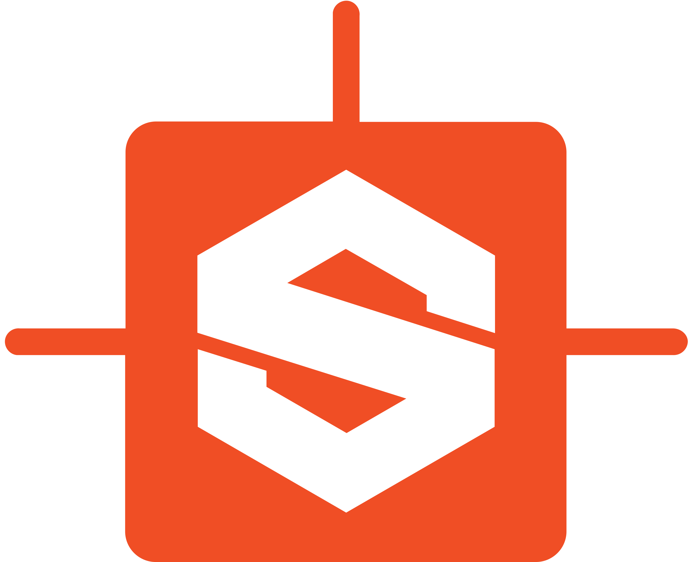
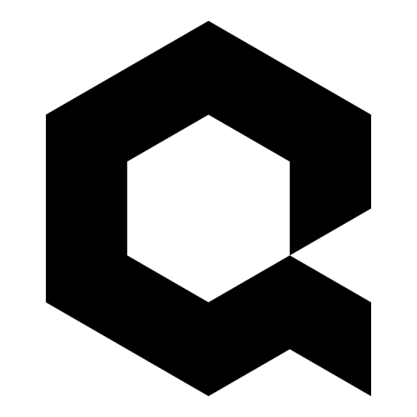
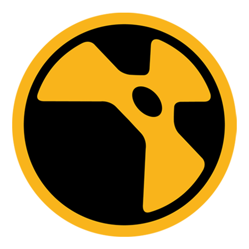

Technical Art
Custom tools and production assets that bridge the gap between creative vision and pure logic.
Asset, Render and Pipeline TD
Automating the boring stuff and building smooth data workflows from ingest to final comp.
3D Generalist
Over 8 years of production experience delivering high-quality visuals with a pragmatic approach.
3D GENERALIST / TECH ARTIST
DUNAUJVAROS, HUNGARY
Software

Substance Designer
Quixel Suite
NukeLanguages, Scripting & Other
Portfolio
Showreel
Practical. Remote. Focused.
My transition into Technical Art came from the studio floor.
I spent years identifying production bottlenecks and naturally stepped into the role
of the person who fixes them. For me, there is nothing more rewarding than seeing a
frustrated artist realize that a task which used to take them half a day now happens in a single click.
Operating 100% remotely from the countryside, I bridge the gap between creative teams and technical logic.
I combine my years of 3D generalist experience with Python, VEX, and modern automation to provide studios with
the stability they need to scale their output—without the usual pipeline headaches.
Education
Mesharray Digital Media School
Maya 3D Generalist
Experiences
Beam.Space.:
Lead Technical / Tool Artis (Material Pipeline)
- Designed and co-developed an automated photogrammetry and scanning pipeline for high-fidelity physical assets (fabrics, leather, and organic textures).
- Authored custom MEL, Batch and Python tools and plugins for Substance Designer to automate maps processing, tiling, and PBR material generation, scene assembly, and rendering, drastically reducing manual artist intervention.
- Optimized data ingestion and processing workflows, ensuring seamless transitions from raw scanned data to engine-ready production assets.
Ionart Studios.:
3D Generalist / Tool Technical Artis / Pipeline Management
- Spearheaded the development of Houdini-based procedural systems and custom Houdini Digital Assets (HDAs) tailored for complex environment, FX and Rendering pipelines.
- Engineered studio-wide automation tools using Python, VEX, Batch and MEL to streamline data transfer between Houdini, Maya, Blender, Nuke, Fusion and DaVinci Resolve.
- Acted as the primary technical problem solver for the production team, resolving pipeline bottlenecks, render errors, and complex scene assembly issues.
- Maintained an agile, pragmatic approach to workflow optimization, consistently turning unexpected technical limitations into production efficiencies.
Interests
Tech Exploration & Upskilling
I am driven by a constant curiosity for emerging technologies and how they reshape production efficiency. Right now, my main interests lie in exploring advanced USD (Universal Scene Description) workflows, testing the latest automation features, and leveraging LLMs to write cleaner, faster pipeline scripts. Keeping up with these standards allows me to introduce immediate technical value to any modern studio pipeline.
Expanding the Toolkit: Unity & Interactive Design
Beyond traditional film and VFX workflows, I am actively diving into the world of
real-time development.
My current focus is mastering Unity as a Technical Artist
and Designer—experimenting with custom shaders, creating dynamic effects via VFX Graph,
and building interactive gameplay mechanics using both C# and Visual Scripting.
For me, bridging the gap between standalone assets and interactive logic is where the real fun begins.